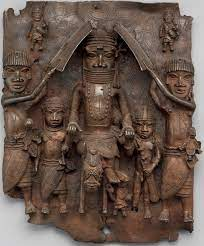

169. Wall plaque, from Oba’s palace. Edo peoples, Benin (Nigeria). 16th century C.E. Cast brass.
- Form and Content
- Hierarchical proportions: largest figure is the king
- Symbols of high rank are emphasized
- King is stepping on a fallen leader
- Emphasis on heads; bodies are often small and immature
- Ceremonial scene at court
- Materials
- One of 900 brass plaques produced, each between 16 and 18 inches
- Metal products are rare in Africa, making these objects extremely valuable
- There was an active trade with Portuguese for brass
- Function
- It decorated the walls of the royal palace in Benin
- It was part of a sprawling palace complex; wooden pillars covered with brass plaques
- Context
- Shows aspects of court life in the Benin culture
- The oba(king) was believed to be a direct descendant of Oranmiyan, the legendary founder of the dynasty